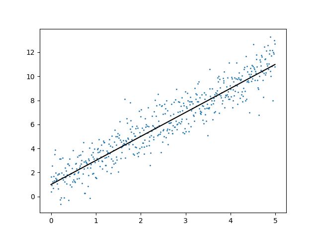

2021
Dr. Rene Staritzbichler
Optimization of mathematical model by usage of data
Discrete: classes or categories:
| good | bad |
|---|---|
| alive | dead |
| disease X | not having disease X |
Continuous data:

y = f(x)
y = f(x,c), where c are inner parameter
Supervised learning
Unsupervised learning